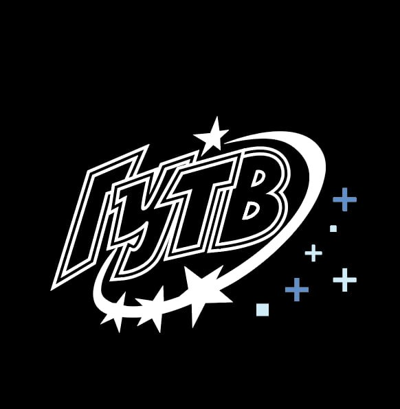
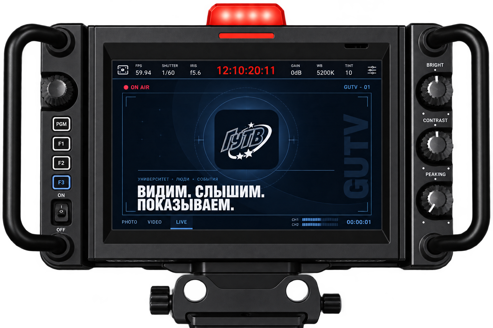

Репортажи
Сохраняем главное в событиях университета — от идеи до готового материала.

СтуденческоеГУТВ · Эфир университета
Расскажите нам о мероприятии — мы соберём команду, подготовим технику и поможем сохранить главное.

О студии
ГУТВ объединяет людей, которым близки съёмка, звук, монтаж и прямой эфир. Мы работаем с факультетами и организациями — от первой идеи до готового материала.
Команда / управление
Избранное / проекты
Собственные форматы ГУТВ и истории, которые продолжаются за пределами одного события.
Материалы ГУТВ
Видео и истории из официального сообщества ГУТВ.
Все материалы в VK ↗Снять вместе с ГУТВ
Факультеты и организации могут оставить заявку на съёмку и следить за её статусом в личном кабинете.
Направления
Выберите задачу — детали и состав команды уточним после заявки.
Сохраняем главное в событиях университета — от идеи до готового материала.
Снимаем мероприятия, истории людей и всё, чем живёт университет.
Помогаем провести трансляцию и собрать техническую команду на площадке.
Состав команды
В заявке расскажите о мероприятии: дату, место, формат и ожидаемый результат. Команда ГУТВ сама подберёт специалистов под задачу.
Снять вместе с ГУТВ
Расскажите о мероприятии — дата, место, суть события и ожидаемый результат сохранятся в личном кабинете. Специалистов и технику подберёт ГУТВ.